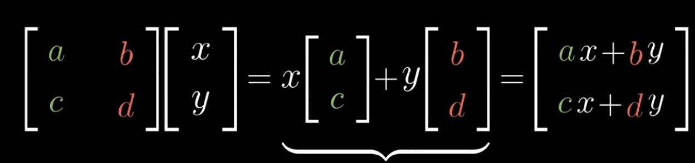
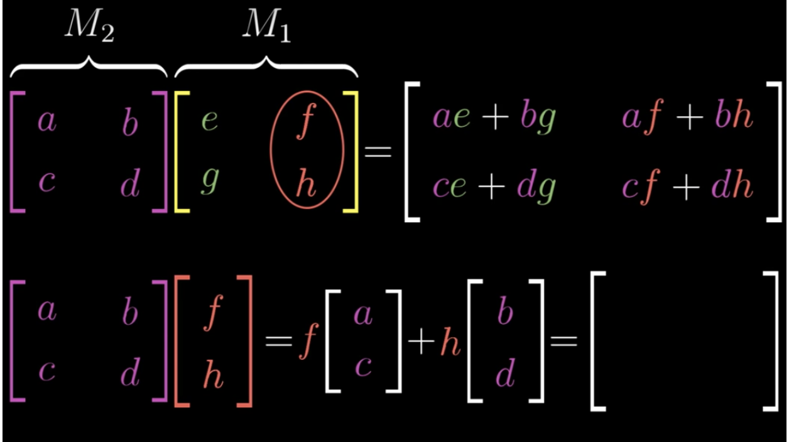
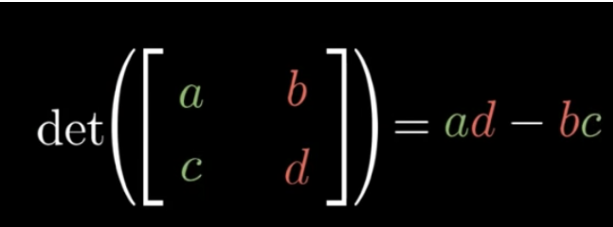
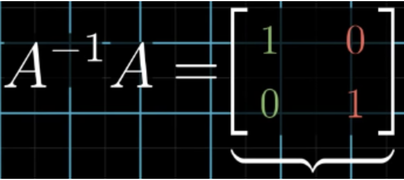
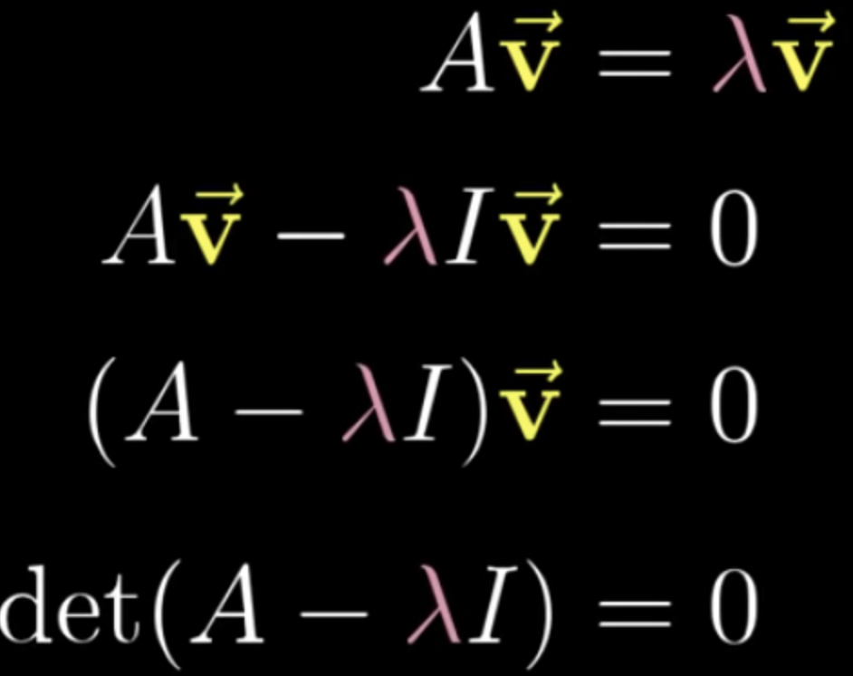

Matricies Basics (2x2)
Vectors: Have direction and magnitude.
Adding:Add rows together
Multiplying by a scale: Multiply the scale factor with all columns
Vectors can be represented as i in the x direction and j in the y direction. 3i-2j is equal to 3 to the left and two down in a 2d plane.
The span is the range of all possible values that a vector can end up in for av+bw. It is possible for a span to be limited in a line(linearly dependent) or stuck at (0,0).
Linear transformation:Takes in a vector and spits out another output vector. Lines remain lines and the origin is fixed
Dot product:

Multiplying:

Finding the determinant:

Inverse:
Finding the inverse of a matrix is like undoing the steps it took to reach that vector point.

Eigenvectors and Eigenvalues:
